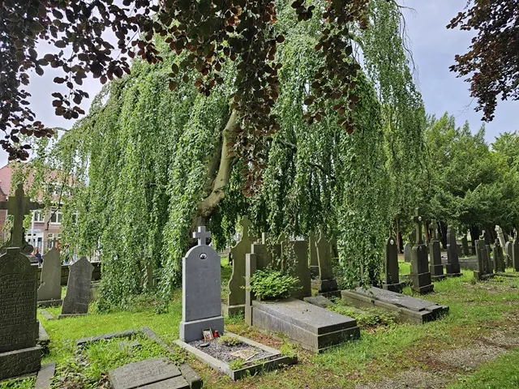

Nieuws ·
Rondleidingen op begraafplaatsen Nijmegen-Oost

Stichting In Paradisum komt al vele decennia op voor de monumentale begraafplaatsen van Nijmegen. T/m augustus verzorgt de stichting elk laatste weekend van de maand rondleidingen.
Zaterdag 29 juni – rondleiding op begraafplaats ‘Stenenkruisstraat’ (gesloten in 1905) van 12:00 tot 13:30 uur. De begraafplaats is daarna nog tot 16:00 opengesteld. De ingang van de begraafplaats is aan de overzijde van Prins Bernhardstraat 17, de rondleidingen starten bij het gebouwtje op de hoek Prins Bernhardstraat en Athlonepad.
Zondag 30 juni – rondleidingen op begraafplaats Daalseweg. Van 13:30 tot 15:00 uur door Bert Eggelaar – met aandacht voor symboliek, vormgeving, kunst en kunstnijverheid – en aansluitend van 15:00 tot 16:30 uur door Bart Janssen, met aandacht voor graven met een bijzonder verhaal, waaronder die van oorlogsslachtoffers.
Voor beide rondleidingen: verzamelen bij de poort van de begraafplaats.